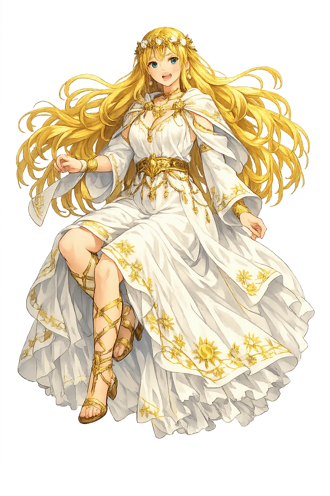
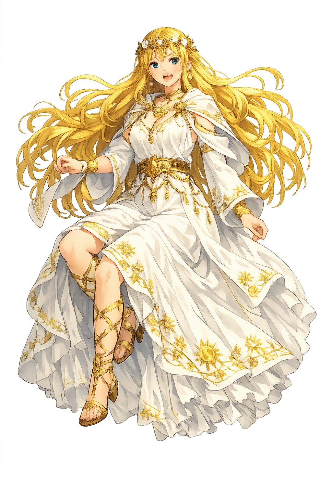

Unicode restoration and ASCII comparison
Niamh
The name survives in scholarly transliteration. Niamh is the standard Celtic romanisation, documented in academic sources — “Bright, radiant”. Because the spelling uses only Latin letters, the form is the same in both ASCII and Unicode.
No indigenous writing system is securely attested for individual celtic names. The form shown is a modern scholarly transliteration.
niamh
The plain niamh form is identical to the Unicode restoration. Because this name is already written in Latin letters, no diacritics, stress, or script information were lost — only capitalization differs.
Niamh
The Unicode restoration does not need to recover lost marks for Niamh. Its value is canonical spelling and consistent cataloguing, not the reconstruction of erased orthography. The domain is readable as-is to both DNS and humanity.
Niamh.com → niamh.com
The non-ASCII characters in Niamh are encoded while the ASCII remains visible. To the DNS, it is Punycode. To humanity, it is Niamh.
How Niamh is preserved in writing
No indigenous writing system is securely attested for individual celtic names. The form shown is a modern scholarly transliteration.
Contribute scholarly provenance →Owned, ideal, and ASCII forms of Niamh
Niamh
The full Unicode restoration. niamh.com is not in the PuniCodex collection — it is watched for release; if it drops, this temple upgrades to an owned flagship.
How Niamh was spoken
The Golden-Haired Rider of Tír na nÓg
Niamh Chinn Óir — Niamh of the Golden Hair — is the bright daughter of the king of Tír na nÓg who rides out of the western sea on a white horse to claim the last great poet of the Fianna. She carries [[oisin|Oisín]] over the waves to the Land of Youth, where three hundred years pass as a single season, and when longing for Ireland breaks him she lends him the horse again with one command: whatever he sees, he must not set foot on Irish soil.
The steed from over the sea that carries Oisín to Tír na nÓg and home again; the lay leaves it unnamed — later tradition gives it Manannán's horse, Enbarr.
Chinn Óir, 'of the Golden Head' — the epithet by which she names herself in the lay: the brightness of her name made visible.
'The Land of the Young', the Irish Otherworld across the western sea — where age, sickness, and decay never come.
The flagstone Oisín stoops to lift in an Irish glen; the girth breaks, his foot touches home soil, and three hundred years fall on him at once.
Stories of Niamh
Niamh's story survives as one tale told one way: the lay Laoi Oisín ar Thír na nÓg, 'The Lay of Oisín in the Land of Youth', ascribed to the eighteenth-century poet Mícheál Coimín and first printed with an English translation by the Ossianic Society in 1859. It is late, beloved, and complete — the fullest Otherworld courtship in Irish literature, and the story every retelling since has followed.
Oisín, son of [[fionn|Fionn mac Cumhaill]] and last great poet of the Fianna, is with his people when a maiden none of them knows rides out of the west on a white horse. She names herself: Niamh Chinn Óir, Niamh of the Golden Hair, daughter of the king of Tír na nÓg. She has heard the fame of Oisín across the sea, she says, and she has come for his love — her praise of him rises above every man of the Fianna present.
Oisín answers that he has never seen her equal, gives her his word, and mounts the white horse behind her. It is the simplest bargain in the Fenian cycle: no riddle, no quest, no combat — only a beautiful stranger keeping her promise to carry him to the land where no one grows old, and a poet who has never once been able to refuse a story.
The white horse rides the sea as if it were a road, and the crossing is the lay's strangest passage. Marvels pass them on the wave: a fawn coursed by a white hound with red ears; a maiden riding with a golden apple in her hand; a young rider in a crimson cloak hard behind her, a gold-hilted sword at his side. Oisín asks what these things mean, and the lay lets them pass unexplained — the Otherworld does not interpret itself for passengers.
The images are the old heraldry of the Irish síd — the red-eared hound, the golden fruit, the pursuit that never ends — set loose on the open sea. Between Ireland and Tír na nÓg there is no geography, only signs.
In the Land of Youth the king receives Oisín, and he and Niamh are made one. There is no age there and no decay; the days pass in music, hunting, and delight, and the reckoning of them slips away. Niamh bears Oisín three children, and at his asking they are named for the world he left: the sons Fionn and Oscar, for his father and his son, and the daughter Plúr na mBan — 'flower of women'.
Three hundred years go by, sweet as a single season. The lay's arithmetic is the whole point of the Otherworld: time in Tír na nÓg is not slower than mortal time — it simply does not accrue. Nothing is saved. Nothing is spent. And nothing, in the end, is enough to make a Fenian forget the Fianna.
Longing comes on Oisín at last: to see Ireland again, to look for his father Fionn and the remnant of the Fianna, to stand once more on the hills of his own country. Niamh does not refuse him. She gives him the white horse for the journey, and with it the command on which everything turns: ride where he will, look where he will — but he must not dismount, for if his foot touches the soil of Ireland he will never return to the Land of Youth.
The warning is the oldest law of the fairy-visit: the mortal may look back, but he may not re-enter. Niamh has kept him three hundred years from the thing she now names — time — and she sends him home wrapped in the only protection she has: a horse, and an instruction.
Ireland is changed past recognition. The Fianna are gone; their ramparts are green mounds; the people are small, and Christianity has come. In a glen of the south — the lay names Gleann an Smóil, the valley of the thrushes — Oisín comes upon a company of men straining to raise a great flagstone that any one man of the Fianna would have lifted alone. Leaning down from the saddle to help them, he puts his strength to the stone — and the saddle-girth breaks.
He falls, and his foot touches the soil of Ireland. In that instant the three hundred years land on him: the youth goes out of him, and he rises an old, withered, grey-haired man, while the white horse wheels away over the sea to Tír na nÓg without him. Niamh's warning was exact. The Land of Youth keeps its own; it does not give them back.
The lay ends where the medieval tradition had long ago stationed Oisín: at the door of St. Patrick. The Acallam na Senórach, the Colloquy of the Ancients composed around 1200, already framed its whole Fenian treasury this way — Oisín and Caílte, the last survivors of the Fianna, walking Ireland with Patrick and reciting its lore place by place. The Niamh episode itself belongs to the later lay tradition, not to the Acallam, but the ending is one: the pagan hero out of time, telling the golden age to the new faith, and refusing to the last to prefer heaven to the Fianna.
Niamh never appears again. She remains in Tír na nÓg with their children — Fionn, Oscar, and Plúr na mBan — on the far side of a sea that Oisín, earthbound and mortal again, will never cross. The white horse came home without a rider. The lay does not say she grieved; it does not need to.
Niamh is the name of a temptation, and the temptation is not what it first seems. She offers beauty, youth, and three hundred years without a wrinkle — and the story's verdict is that the offer is genuine. Tír na nÓg is no trap: the children are real, the delight is real, the warning she gives him is honest and exact. What the lay understands is that exemption from time is itself a kind of exile, and that a mortal carries his mortality inside him as homesickness. Oisín does not fall because the Otherworld failed him; he falls because Ireland is his, and a single touch of its soil outweighs three centuries of paradise.
Enter Extended Lore